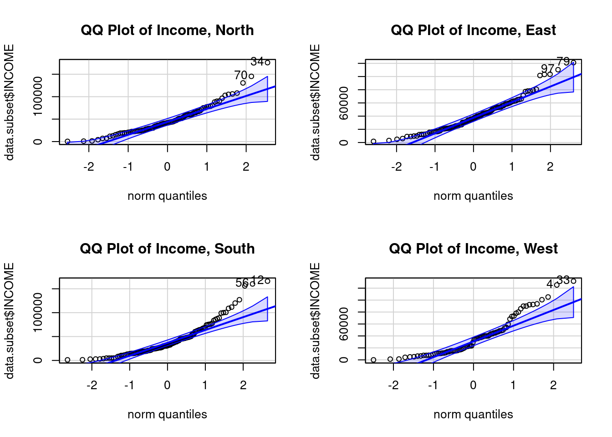

Learning objectives of this asynchronous lesson:
For this set of examples, I will continue to use the sample Cyberville families data created in the t-test page.
data <- read.table(url("https://publish.uwo.ca/~lhornic2/IveyStatistics/Datasets/families.txt"),
header = TRUE)
## suppress scientific notation for ease of reading numbers
options(scipen=99) Using the same set.seed, I can take the exact same random sample from the population. So that I have them for later, I am going to make the variables for HasChildren and HasCollege.
# Using the same random number seed, I will get the same sample from the population dataset
set.seed(11)
# create the random sample dataset for analysis
n <- 400 # sample size
select.obs <- sample(1:nrow(data), n)
study.data <- data[select.obs, ] There are several categorical variables in the `families’ dataset that we have not worked with before. The variables themselves are coded numerically. For example, REGION contains values for 1, 2, 3, and 4. This variable cannot be used continuously. The numerical values assigned to each region are arbitrary.
In order to perform useful analysis with this variable, we need to tell R that it is categorical. We can do that without labelling the categories, or with labelling the categories:
# Identify REGION as a factor variable without labels
study.data$REGION <- as.factor(study.data$REGION)
# Identify REGION as a factor variable with labels
study.data$REGION <- factor(study.data$REGION,
levels = c(1:4),
labels = c("North", "East", "South", "West"))EDUCATION has 16 categories containing a great deal of detail. For some analyses, that level of detail may be useful. It is also reasonable to collapse the categories into fewer categories. We provide an example of how to do that here:
# Create a categorical variable for EDUCATION
study.data$Educ_Cat <- NA
study.data$Educ_Cat[study.data$EDUCATION <= 38] <- 1 # less than HS diploma
study.data$Educ_Cat[study.data$EDUCATION == 39] <- 2 # HS
study.data$Educ_Cat[study.data$EDUCATION > 39 & study.data$EDUCATION <= 42] <- 3 # Some college
study.data$Educ_Cat[study.data$EDUCATION >= 43] <- 4 # University degree
# whenever you create a new variable that is defined from another variable(s), you should double check your coding
aggregate(study.data$EDUCATION~study.data$Educ_Cat, FUN=function(x)
c(avg = mean(x),
min = min(x),
max = max(x))) ## study.data$Educ_Cat study.data$EDUCATION.avg study.data$EDUCATION.min
## 1 1 34.6 31.0
## 2 2 39.0 39.0
## 3 3 40.3 40.0
## 4 4 43.6 43.0
## study.data$EDUCATION.max
## 1 38.0
## 2 39.0
## 3 42.0
## 4 46.0# Identify Educ_Cat as a factor variable with labels
study.data$Educ_Cat <- factor(study.data$Educ_Cat,
levels = c(1:4),
labels = c("lt HS", "HS", "College", "University"))Analysis of variance (ANOVA) test evaluates whether three or more groups share a common average.
Analysis of variance has the same four assumptions as the t-test.
When ANOVA is performed on just two groups, it will result in the same p-value as a t-test.
To develop the theory behind ANOVA, we will use the example question: Is the average income different by Education category? We will use the new Education categories we just created: less than high school, high school diploma, at least some college, and university degree.
ANOVA decomposes the sources of variability in the data. What part of variation is ‘within group’ variation and what part is ‘between group’ variation. If the within group variation is small compared to the variation between groups, then the groups must be meaningfully different from each other.
Lets look at some illustrative data points for Income by Education level:
The first thing we can consider, is the overall variance in income.
Overall unbiased variance of income: \[\mathbb{V}(Income) = \frac{1}{N-1} \sum_i^N (y_i - \bar{Y})^2 \].
The \(N-1\) is required to make the sample variance unbiased, accommodating losing one degree of freedom that occurs from also estimating the sample average.
When calculating the components of variance for ANOVA we will first focus on the sum of squares part and drop the \(\frac{1}{N-1}\) scaling factor. We will come back to that later.
Therefore, we calculate the total sum of squares: \[\mathbb{SS}_T = \sum_i^N (y_i - \bar{Y})^2 \]
The question ANOVA seeks to answer is: Is the average sum of squared within groups equal to the average sum of squares between groups.
Let’s break down the sum of squared total into the two sources of variance.
So, let’s look at the sum of squared within groups:
Sum of squares within groups: \[\mathbb{SS}_W = \sum_j^J \sum_{i \in j}^{} (y_i - \bar{y_j})^2 \]
The sum of squares within groups represents the variation of the individual points from the average of their own group. If this is small relative to the variation of the groups compared to the overall average, then the groups must have different averages from each other.
Lets now look at that sum of squares between groups. For each group, we calculate square the difference between the group mean and the overall mean. To put this number on the same scale at the sum of squares within group, we multiply the value by the sample size for each group.
Sum of squares between groups: \[\mathbb{SS}_B = \sum_j^J N_j (\bar{y_j} - \bar{Y})^2 \]
If the groups are not different from each other, then the within group variation and the between group variation will be very similar or equal.
If the groups are very different from each other, then the within group variation will be small and the between group variation will be large.
If you have a null hypothesis where two things are equal, then – as we saw with the t-test – you can subtract them and compare the difference to 0. In this specific case, that approach would be mathematically inconvenient (especially in the 1920s when ANOVA was developed by Robert Fisher).
Another way to evaluate whether two things are equal is to compare the ratio of those two things to 1. This turns out to be mathematically convenient in this case because the two sum of squares divided by their degrees of freedom (scaling them to adjust for sample size) are \(\chi^2\) distributed. The ratio of two \(\chi^2\) distributions is called the \(F\) distribution (named after Fisher). Fisher may have chosen this approach because of preliminary critical values tables already existed for the \(F\) distribution as he was also working on the F-test, which is a parametric comparison of variances.
We now calculate the Mean Squared Error within groups and between groups by dividing each Sum of Squared value by its degrees of freedom. This scales the Sum of Squares calculation by the sample size.
Mean squared error within groups: \[MS_W = \mathbb{SS}_W / (N - J)\] where \(N\) is the total number of observations and \(J\) is the number of groups.
Mean squared error between groups: \[MS_B = \mathbb{SS}_B / (J - 1)\]
The ratio of these two measures is called the \(F\) statistic and, under the null hypothesis where the ratio is equal to 1, it is F-distributed with \(N-J\) and \(J-1\) degrees of freedom.
\[F = \frac{\mathbb{SS}_B / (J - 1)}{\mathbb{SS}_W / (N - J)}\] #### Calculating the p-value
Recall that the null hypothesis is that all groups have the same average.
When the p-value is more than 0.05, we do not reject the null hypothesis. There is not sufficient evidence in the data to declare, with 95% confidence, that the groups are different from each other.
When the p-value is less than 0.05, we reject the null hypothesis. This doesn’t tell us whether all the groups are different from each other, or if three of four groups are really mostly the same and one group is very different. To answer those questions, we could look at the bar graph. Or, to be precise, we would need to do pair-wise t-tests. However, when doing a large number of two-way comparisons, be mindful of using a more stingent p-value cut-off because you are compounding your error to do a lot of tests at a 0.05 threshold. (Remember 1 in 20 tests will falsely say that two groups are different when they are actually the same!)
There are several approaches to doing an ANOVA in R.
## Method 1.
anova(lm(study.data$INCOME ~ study.data$Educ_Cat))## Analysis of Variance Table
##
## Response: study.data$INCOME
## Df Sum Sq Mean Sq F value Pr(>F)
## study.data$Educ_Cat 3 93339883554 31113294518 43.7 <0.0000000000000002
## Residuals 396 282216861883 712668843
##
## study.data$Educ_Cat ***
## Residuals
## ---
## Signif. codes: 0 '***' 0.001 '**' 0.01 '*' 0.05 '.' 0.1 ' ' 1## Method 2.
summary(aov(study.data$INCOME ~ study.data$Educ_Cat))## Df Sum Sq Mean Sq F value Pr(>F)
## study.data$Educ_Cat 3 93339883554 31113294518 43.7 <0.0000000000000002
## Residuals 396 282216861883 712668843
##
## study.data$Educ_Cat ***
## Residuals
## ---
## Signif. codes: 0 '***' 0.001 '**' 0.01 '*' 0.05 '.' 0.1 ' ' 1There are four key assumptions of ANOVA
An ANOVA is quite robust against violations of the normality assumption. Violations of the homogeneity of variances assumption can be impactful, especially when sample sizes are unequal between conditions. When assumptions are not satisfied, Kruskall-Wallis is a non-parametric alternative.
Lets walk though all the steps of ANOVA for a second example.
Consider the question: Does income vary by region?
H0: Average income is equal across all regions
HA: Average income is not equal across all regions
This assumption requires understanding how the data were collected.
Our data are a random sample of the whole population so any relationships between households would be randomly occurring within the data. Therefore, the observations are independent.
We will use histograms and QQ plots to evaluate the Normality of the data.

Observations: South and West region look least Normally distributed in both the histograms and the QQ plots. This, at best, weakly satisfies the Normal assumption because ANOVA is quite tolerant to violations in this assumption.
However, in the histograms, it also appears like the standard deviations are very different across groups as I move into checking assumption 4.
There are three ways to check the constant variance assumption.
income.summary <- aggregate(study.data$INCOME ~ study.data$REGION,
FUN=function(x) {
c(
avg = mean(x),
n = length(x),
var = var(x),
sd = sd(x),
se = sd(x)/sqrt(length(x)),
lower95 = mean(x) + qnorm(0.025)*sd(x)/sqrt(length(x)),
upper95 = mean(x) + qnorm(0.975)*sd(x)/sqrt(length(x))
)
}
)
# aggregate tends to make difficult to use objects
# Convert the resulting array into a data frame with appropriate columns
income.summary <- do.call(data.frame, income.summary)
names(income.summary) <- c("Region", "avg", "n", "var", "sd", "se", "lower95", "upper95")
# print the table
income.summary## Region avg n var sd se lower95 upper95
## 1 North 48174 91 1035532470 32180 3373 41562 54786
## 2 East 40082 107 597591741 24446 2363 35450 44713
## 3 South 41390 122 1128104667 33587 3041 35430 47350
## 4 West 37224 80 972227879 31181 3486 30392 44057# Boxplot
boxplot(study.data$INCOME ~ study.data$REGION,
ylim = c(0, 200000),
las = 1,
ylab = "",
main = "Box plot of income, by Region",
xlab = "Region")There are some differences in the width of the interquartile range (indicated by the whiskers in the boxplot) and in the standard deviations (lowest at 24K and highest at 33K), but overall I would consider this all acceptable for continuing with ANOVA.
Levene’s Test evaluates the null hypothesis that the three or more samples come from a population with the same variance. Any differences observed in the sample variances would have only occurred by chance, because sampling introduces randomness.
Levene’s Test test has two assumptions
## Levene's test for Equality of Variances
## H0: All the samples come from a population with the same variance
leveneTest(study.data$INCOME ~ study.data$REGION)## Levene's Test for Homogeneity of Variance (center = median)
## Df F value Pr(>F)
## group 3 1.38 0.25
## 396We observe a p-value of 0.25 indicating that we cannot reject the null hypothesis that the samples share a common variance. As such, we have satisfied Assumption 4 (homogeneity of variances).
Combining all the information in our assessments, there is a risk of the combination of poor fit to Normal distribution, heteroskedasticity, and the imbalance in sample size (which aggravates the differences in variance) increasing the risk of a false finding. I am particularly worried that the distributions are not Normal enough for ANOVA. So, to reassure myself, I will also do a Kruskall-Wallis test.
Now that we have decided that ANOVA is reasonably appropriate, we can run the test and interpret the findings.
# H0: Families have the same average income across regions
anova(lm(study.data$INCOME ~ study.data$REGION))## Analysis of Variance Table
##
## Response: study.data$INCOME
## Df Sum Sq Mean Sq F value Pr(>F)
## study.data$REGION 3 5707431351 1902477117 2.04 0.11
## Residuals 396 369849314086 933962914We observe a p-value of 0.1083 Therefore, we do not reject the null hypothesis that the average income is the same across regions. ’ This study does not provide sufficient evidence that the regions have different incomes.
Presenting the results in a bar graph with error bars is a traditional way of presenting means across groups.
# Draw a bar graph
par(mgp = c(3, 0.6, 0)) # Adjusting the distance of the y-axis labels from the axis
barplot_obj <- barplot(income.summary$avg,
main = "Average Income of Families, by Region",
ylab = "Average Income ($)",
names.arg = income.summary$Region,
ylim = c(0, 60000), # sets the bounds on the y-axis
las = 1 ) # orients the y-axis labels to read horizontally)
# Add error bars
arrows(x0 = barplot_obj, y0 = income.summary$upper95, # position of the upper end of bars
x1 = barplot_obj, y1 = income.summary$lower95, # position of the lower end of bars
angle = 90, code = 3, length = 0.1) # features of the error barsThe Kruskall-Wallis test is a generalized Mann-Whitney U Test and
provides a non-parametric alternative to ANOVA.
As such, the Kruskall-Wallis compares the distributions of three or more
groups answering the question: Do all these groups come from the same
population distribution? The null hypothesis is that all of the groups
were sampled from the same population distribution.
The Kruskall-Wallis test only has two assumptions
Let’s continue with the question: Is the average income the same across all regions of the city?
Above, we evaluated each of the assumptions of ANOVA finding that the data weakly satisfied the Normal distribution assumption, weakly satisfied the homogeneity of variances assumption, and because of the imbalance in sample sizes across the groups (which aggravates the differences in variance), we worried about increasing the risk of a false finding.
Therefore, we now consider the robust non-parametric alternative to ANOVA.
# H0: All groups come from the same distribution
kruskal.test(study.data$INCOME ~ study.data$REGION)##
## Kruskal-Wallis rank sum test
##
## data: study.data$INCOME by study.data$REGION
## Kruskal-Wallis chi-squared = 9, df = 3, p-value = 0.02We observe a p-value of 0.02. Therefore, we reject the null hypothesis that the average income is the same across regions. ’
This finding contradicts our previous finding using ANOVA. When an appropriate non-parametric test rejects the null hypothesis and a parametric test does not, you can trust the result of the non-parametric test. The contradiction was likely because we did not sufficiently satisfy the Normality assumption.
Next: Fisher’s Exact and Chi-Squared Tests